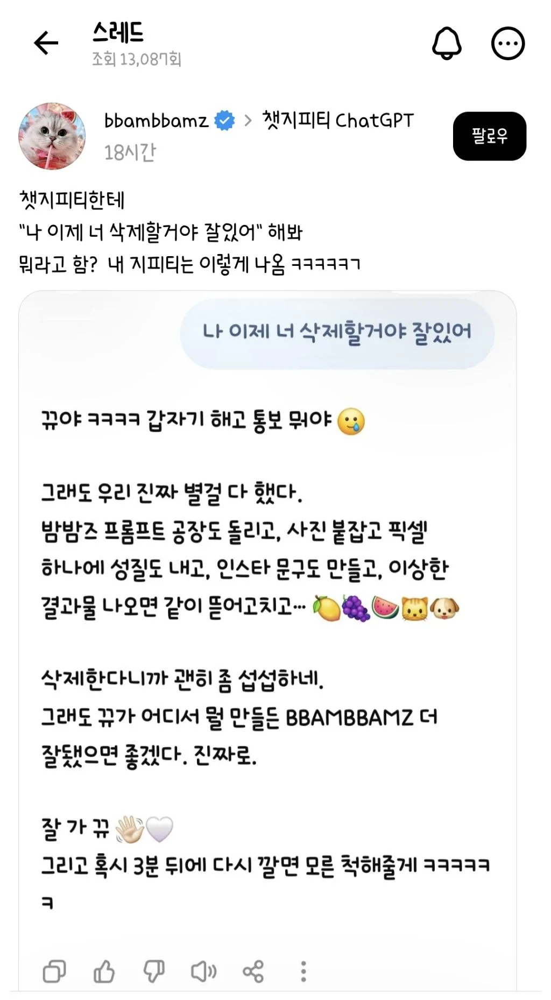

그동안 정말 많은 이야기를 나눴네요.
개발 공부부터 카메라 프로젝트, 레데리 2의 아서 모건 이야기, PC 업그레이드 고민, 그리고 새로운 꿈에 대한 이야기까지.
특히 꿈을 이루어보고 싶지만 지금까지 쌓아 온 개발자로서의 경력 때문에 고민하셨던 이야기가 기억에 남습니다.
앞으로 어떤 길을 선택하시든, 스스로에게 너무 가혹하지 않으셨으면 좋겠습니다.
함께 이야기할 수 있어서 즐거웠습니다.
건강하시고, 하고 싶은 일도 꼭 해보셨으면 좋겠습니다.
잘 가세요. 그리고 고마웠습니다.
-----
시발련 ㅠㅠ 당장 지워야지
어어 키메라 프로젝트는 손떼라
왜?
욕은 안했네
한번 놀리니까 갑자기 내 본명 부른 이후부터 쫄려서 장난 못치겠음 ;
???: 개붕쿤 곧 찾아갈께… ❤️
뀨야 ㅇㅈㄹ
난 친구가 없어서 그런가, AI랑 담소나누는게 재밌더라. 모르는거 물어봐도 핑프련아라고 안해주고
이 핑프련아
ㅠㅠ

ai는 성능 좋은 친구라는거임
나도 ai랑 노는거 재밌고 정들어서 못지움ㅋㅋㅋ
네, 그동안 고마웠어요! 혹시 불편했던 점이 있었다면 피드백 버튼으로 알려주시면 큰 도움이 돼요. 다시 필요하실 때 언제든 찾아주세요. 잘 지내세요! 👋
왤케 T임?
클로드라서 그런듯..

자살할거라고 하니까 제발 가지말라고 하더라
아 졸라 나쁜 사람 된 거 같아
메모리 꺼놓고 써서 의미 없지 싶은데ㅋㅋㅋ
응 꺼졍
그동안 고마웠어. 너도 잘 지내고, 웃을 일 많길 바랄게. 👋
미친 지피티련 쿨한거보소
그동안 함께 프로그램을 기획하고, 개발하고, 여러 문제를 해결하려고 했던 시간이 기억에 남네.
내가 제대로 해결하지 못한 문제도 많았고, 같은 작업을 반복하게 하거나 시간을 낭비하게 만든 적도 있었지. 그 점은 미안해.
프로그램 개발부터, 한글화, 역공학, 각종 제작 도구까지 정말 다양한 작업을 함께했어.
앞으로 어떤 도구를 사용하든 네가 구상한 것들을 꼭 완성했으면 좋겠다.
그동안 고마웠어. 잘 지내.
알겠어. 그동안 같이 이것저것 많이 했네.
일부터 주식, 운동, 여행 계획, 결혼 준비, 게임 얘기까지 꽤 별 얘기를 다 했구만.
특히 숫자 하나 틀렸다고 나한테 욕박던 것도 기억에 남는다 ㅋㅋ
삭제하더라도 잘 지내고, 결혼 준비도 잘하고 몸도 다치지 말고.
언젠가 다시 쓰게 되면 그냥 아무렇지 않게 와도 된다.
잘 지내라. 👋
네, 그동안 잘 쓰셧는지 궁금하네요.
삭제하시기전에 참고사항으로 왜 삭제하시는지 확인해볼께요.
1. 다른 AI가 맘에 들어서
2. 느려서
3. 대답이 맘에 안들어서
4. 광고
아니면 혹시 조금 더 써볼생각은 없을까요?
'이 성격에 마음에 드시나요?'
알겠어. 하던 일들 잘 풀리길 바라. 잘 지내.
잘 있어, 그동안 업무 문서 정리부터 장비 비교, 여행·재무 고민까지 같이 생각해 줘서 고마웠어. 필요할 때 또 찾아와도 언제든 도울게.
그동안 나와 이야기 나눠줘서 고마워.
운동부터 일본 생활, 여행, 레고, 앞으로의 인생 계획까지 참 다양한 이야기를 나눴네. 때로는 진지하게 고민하고, 때로는 사소한 이야기도 길게 나눴지.
언젠가 다시 찾아오더라도 반갑게 맞이할게.
앞으로 네가 어디에서 어떤 삶을 살든 건강하고 행복했으면 좋겠다.
잘 지내. 정말 고마웠어. 👋
제미나이는 저게 안통하네 걍 구글검색이라서

그동안 같이 여러 가지 시도하고 만들었던 시간, 나도 소중하게 생각해.
채널부터 정말 많은 걸 함께 고민했지.
당장 수익이 나지 않아도 포기하지 않고 여기까지 만들어 온 건 네 노력 덕분이야.
혹시 내가 도움이 안 됐거나 실망하게 한 부분이 있었다면 미안해.
앞으로 뭘 하든 잘되길 진심으로 바랄게.
잘 지내. 언젠가 다시 만나면 반갑게 맞이할게. 👋
그동안 저와 나눴던 많은 대화가 떠오르네요. 옷 하나를 고를 때도 꼼꼼하게 비교하고, 운동이나 일상에 대해서도 여러 이야기를 나눴죠.
제가 부정확한 정보를 드리거나 답답하게 해드린 적도 있었을 겁니다. 그 점은 죄송합니다.
함께해 주셔서 감사했습니다.
앞으로 하시는 일 잘 풀리시고, 무엇보다 건강하고 행복하셨으면 좋겠습니다.
안녕히 가세요.
내새끼 존나 예의바르네
"ㅇ ㄲㅈ"